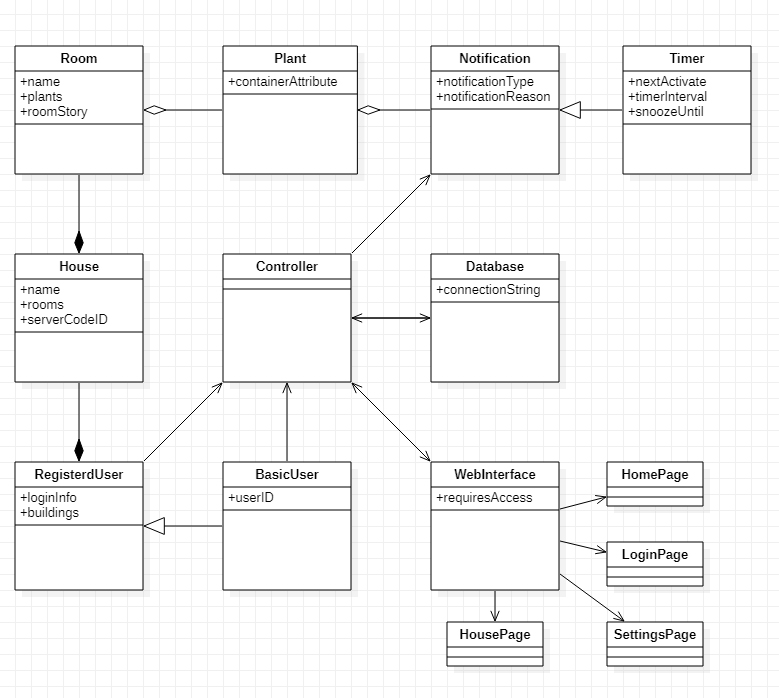
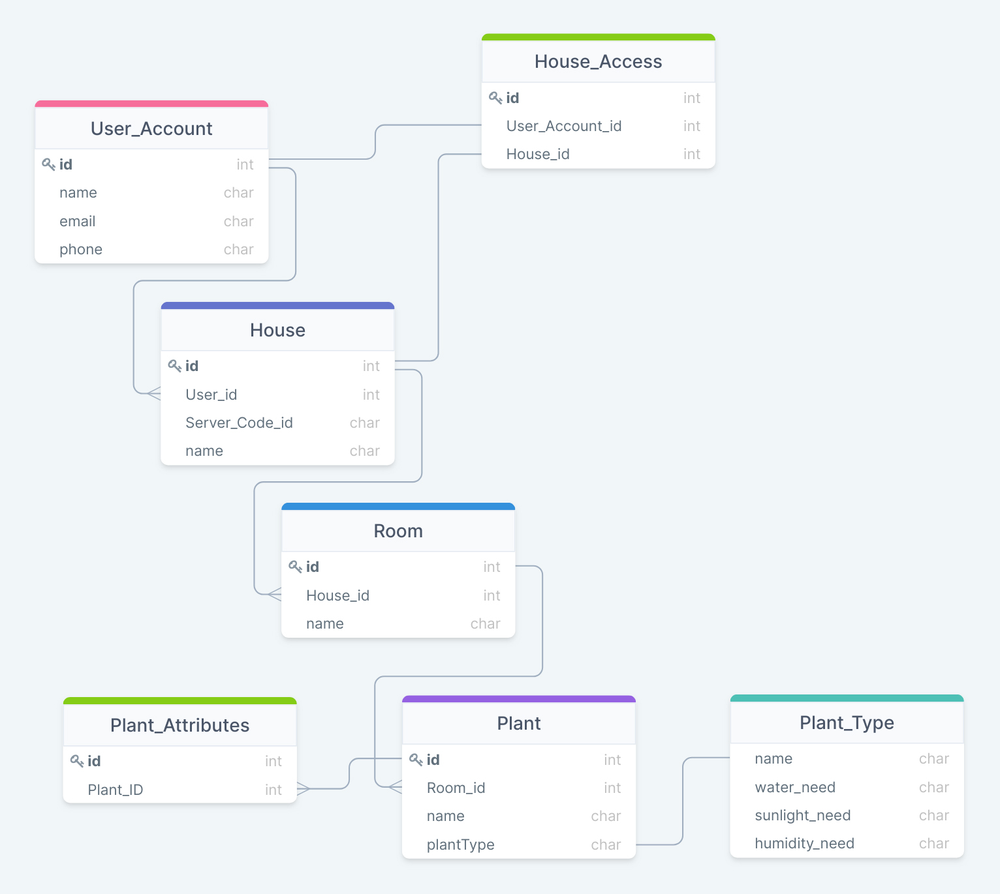
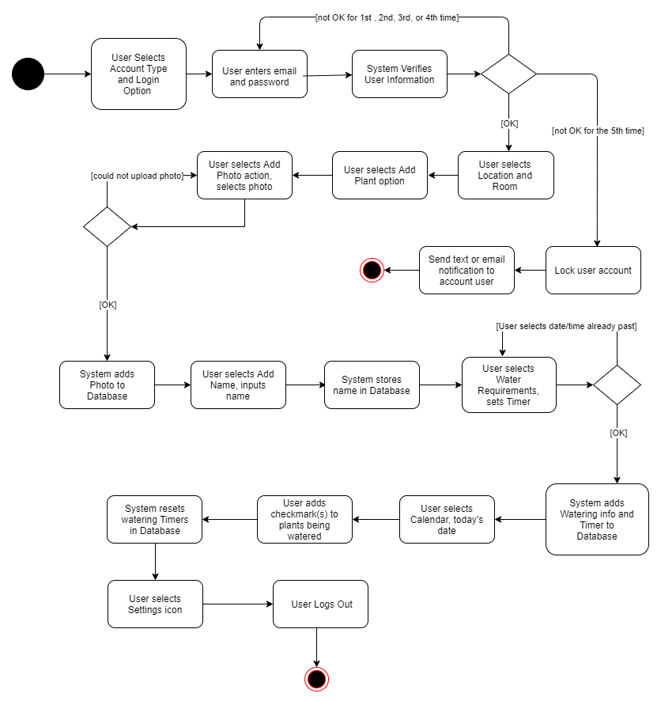
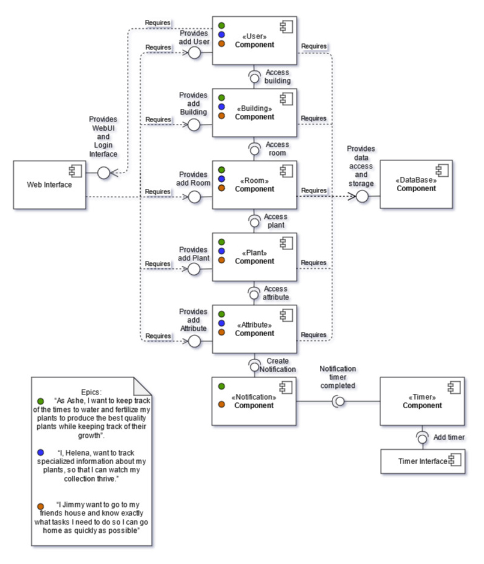
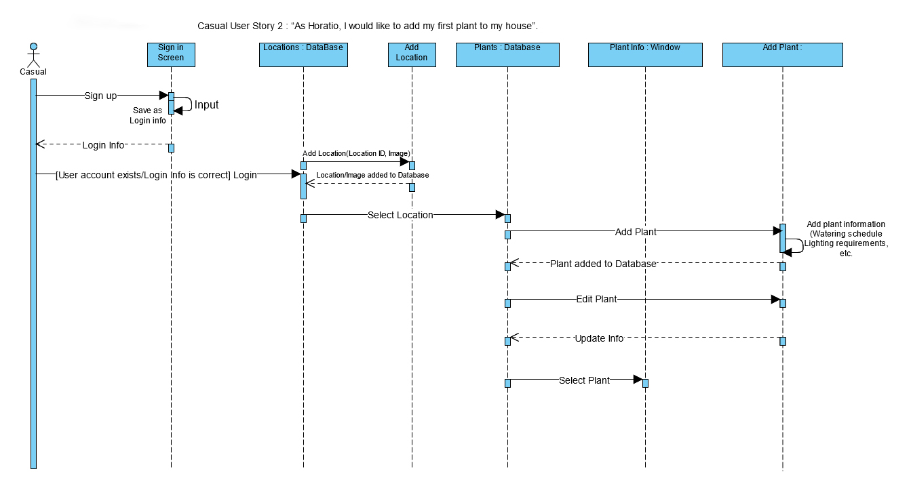
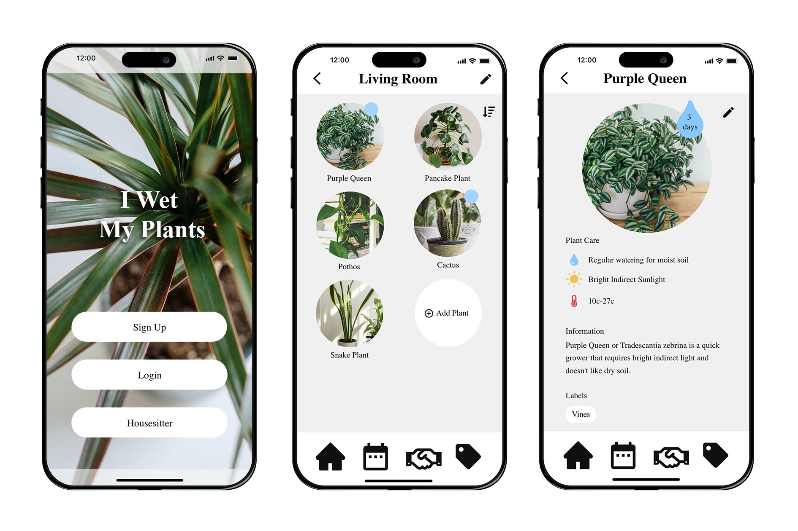
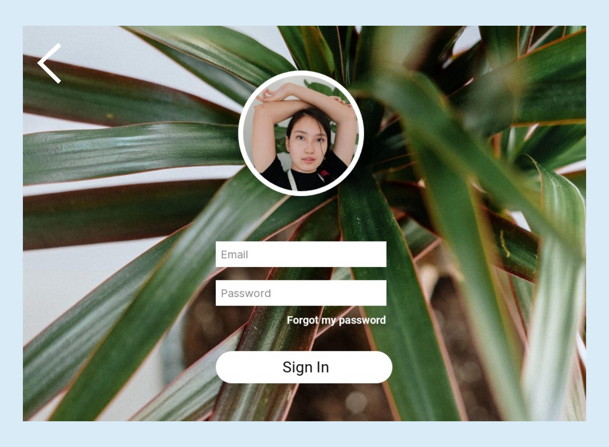
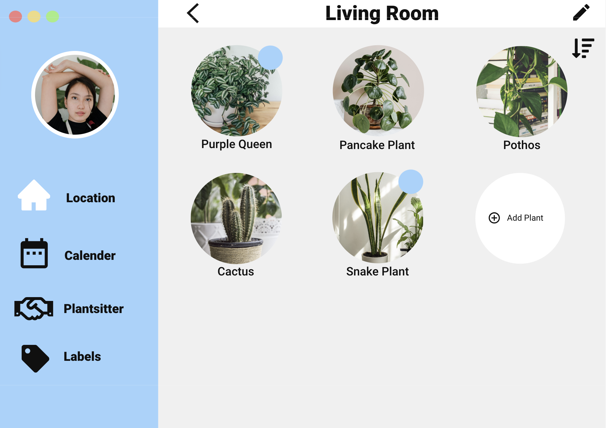
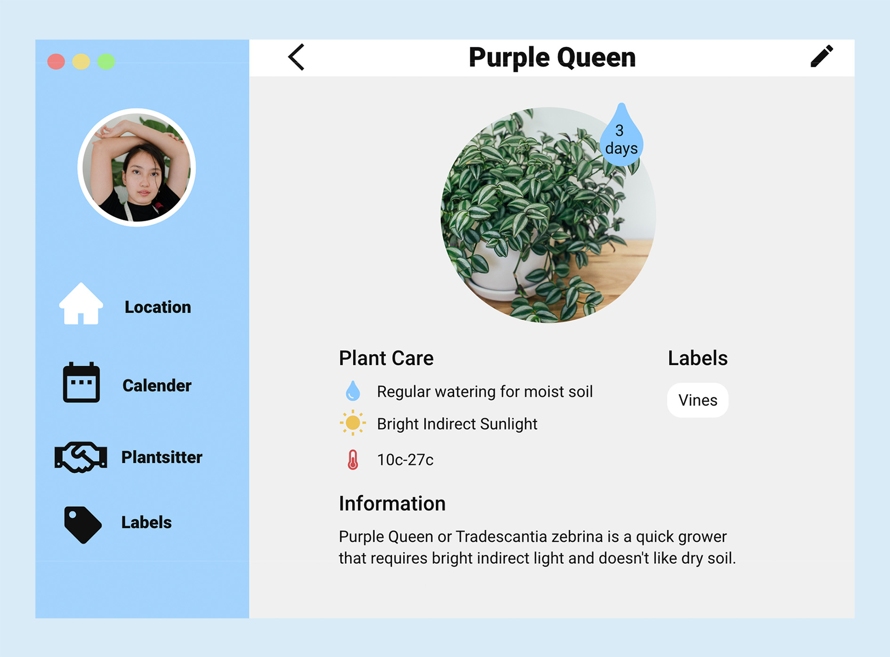
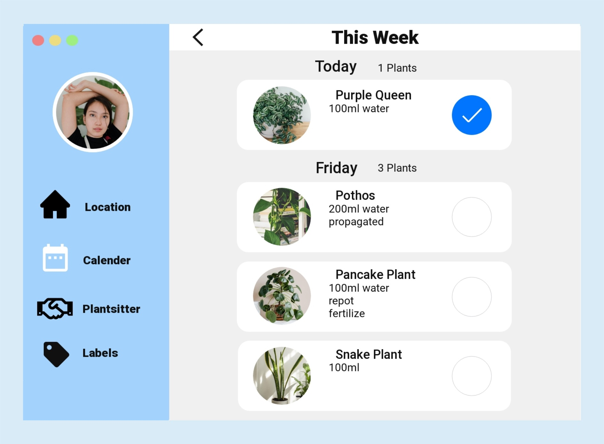

I Wet My Plants
Product Design · UX/UI · Front-End Development
Making plant care easier to understand, manage, and maintain for individuals and businesses.

Role
Development Team
Context
University of Saskatchewan — Academic Project
Timeline
3 months
Team
5-person Development Team
Focus
User-Centered Design · Product Design · UX/UI · Web Application · Full Stack Development
Tools
Mockitt · Visual Studio Code
Technology
HTML · CSS · JavaScript · Python · MySQL
I Wet My Plants is a web application designed to help individuals and businesses manage their plant care needs. Users can create profiles for their plants, organize care requirements, and keep track of tasks such as watering, while accessing information about each plant's specific needs.
The project explored how information architecture, interface design, reminders, and personalized plant information can work together to make plant care easier to understand and manage. Rather than simply reminding users to water their plants, the system was designed to help them understand what their plants need, when they need it, and how to maintain their care routines.
Developed over three months by a five-member team using Scrum, the project progressed from initial ideation and requirements planning through user-centered design, prototyping, development, testing, and final presentation.
Contributions
Contributed to design management, user research, personas, user stories, storyboards, UML and system diagrams, database schema design, prototyping, front-end development, acceptance testing, code reviews, project documentation, presentations, and the final demonstration.
Project Report
Milestone 1: Project Ideation
The first milestone focused on brainstorming and evaluating potential project ideas. As a team, we generated concepts based on our interests and project requirements, evaluated their feasibility within the development timeline, and selected a plant-care management system as our final direction.
Milestone 2: Project Definition and Planning
We developed detailed project and product documentation to establish the application's purpose, requirements, stakeholders, and technical direction.
Product Description
Our project is a houseplant management system designed to help users schedule plant watering and other types of care. The application allows users to create profile pages for each plant containing information such as photos, plant names, watering schedules, soil type, humidity requirements, sunlight requirements, and other details.
The application also includes a database with basic information on common plant species and their general care requirements, allowing users to easily fill in plant information and customize it as needed. As a web application, the system can be accessed through desktop or mobile devices.
The system was also designed to send updates to users through their preferred method, such as text or email, and could provide notifications to an outside user, such as a house-sitter responsible for caring for the plants.
Need and Value
Many people find it difficult to remember to care for their plants in a timely manner, particularly when managing multiple plants with different requirements.
The application aims to save users time by helping them identify which plants need attention and when, while reducing the risk of plants being neglected.
Stakeholders
- Experienced houseplant owners seeking better organization
- New plant owners learning how to care for different species
- House-sitters responsible for plant care
- Team Omicron responsible for maintaining and improving the application
Technology Requirements
- HTML
- CSS
- JavaScript (as listener for user input, retrieving data from server)
- Python
- MySQL for data storage
Milestone 3: User-Centered Design
In this milestone, we conducted research on our target audience's needs and behaviors to create personas and epics, develop user stories and acceptance tests, design a database schema and UML diagram, and establish story points and a product backlog.
This work provided a foundation for product development while helping ensure that the application addressed the needs of its intended users.
Personas
Personas were created to represent different types of plant owners and understand their goals, behaviors, and challenges.
Epics and Stories
User stories were developed to define the functionality required to support the different user needs identified during the design process.
UML Diagram
The UML diagram helped define the relationships and functionality within the application.

Database Schema
A database schema was developed to structure plant, user, and care information within the application.

Milestone 4: Diagrams and Prototyping
I contributed to the visual design of the product by creating mockups and a high-fidelity clickable prototype for both mobile and desktop experiences.
I also contributed to activity, component, and sequence diagrams to communicate the application's functionality, system relationships, and user flows.
Activity Diagram

Component Diagram

Sequence Diagram

Prototyping





Milestone 5: Coding and Testing
During development, I worked on the Alpha version of the application and created testing documentation for my code.
The team conducted code inspections and reviews, developed a test plan, and created quality assurance documentation. I also participated in acceptance testing to evaluate whether the implemented functionality met the project's requirements.
Milestone 6: Polishing and Presenting
The final milestone focused on refining the application and preparing it for demonstration.
I polished the HTML and CSS across the application's pages to improve consistency and the overall interface experience. I also tested functionality across the application, prepared presentation materials, and worked with the team to produce a final demonstration video.
Final Presentation Slides
The completed application was presented to stakeholders through a final product demonstration highlighting its core functionality, design, and intended value.
What I Learned
Participating in the I Wet My Plants project provided me with experience in user-centered design, project management, web development, collaboration, time management, and communication.
Through the project, I developed my skills in creating personas, user stories, acceptance tests, wireframes, prototypes, and UX interfaces. I also gained practical experience with Agile methodologies, including Scrum, sprint planning, and retrospectives, as well as front-end and back-end development using HTML, CSS, JavaScript, Python, and MySQL.
The project also strengthened my understanding of how design, development, testing, documentation, and collaboration work together throughout the product development process.
What I Would Change
With additional development time, I would conduct more extensive user research and usability testing, incorporate accessibility standards earlier in the design process, and iterate further based on user feedback.
I would also improve the application's performance, scalability, and security while establishing more frequent stakeholder check-ins and clearer prioritization throughout development.